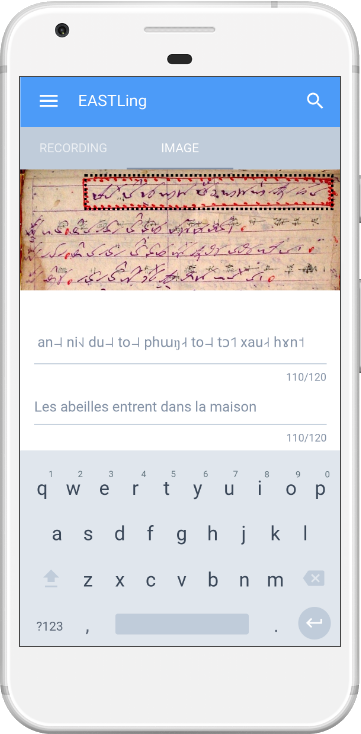
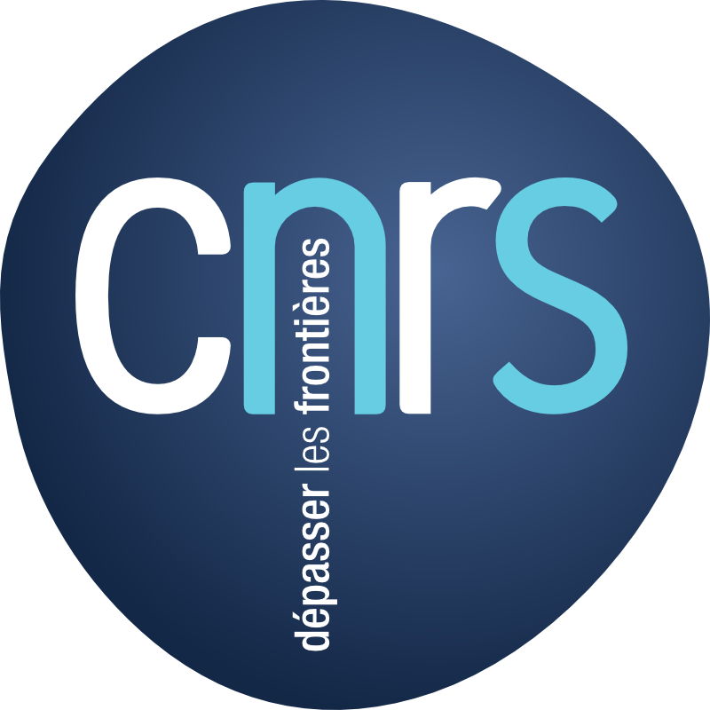
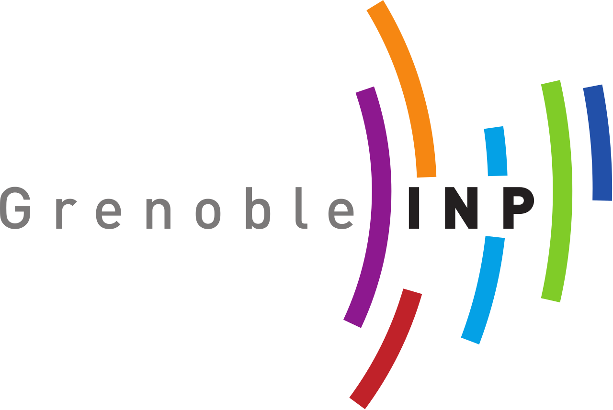

eastling
Easy Annotation & Synchronization Tools for Linguists
Origines
Matthew DEO
EASTLing
Easy Annotation & Synchronization Tool for Linguists
Perspectives
Perspectives


ꪼꪒ ꪥꪮꪙ ! Merci !
matthewdeo@gmail.com

